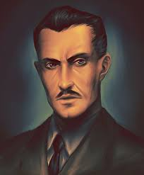

O mne
Volám sa Andrew Ryan a verím v silu jednotlivca. Vytvoril som Rapture ako útočisko pred tyraniou vlád a bohov. Tu môžu vedci, umelci a priemyselníci rozvíjať svoje schopnosti slobodne.
Slovo zakladateľa
„Otázka nie je, čo je správne pre väčšinu. Otázka je, čo je správne pre jednotlivca. Keď som kráčal po brehoch civilizácie, videl som, ako sa svet láme pod ťarchou ilúzií: štáty, ktoré si nárokujú ovládať ducha človeka; náboženstvá, ktoré trestajú za otázky; spoločnosti, ktoré potláčajú výnimočnosť v mene priemernosti.
Tak som sa opýtal: Či neexistuje miesto, kde veľký človek nie je spútaný slabým? Kde umenie, veda a priemysel môžu kvitnúť bez okov morálnej a ekonomickej rovnosti? V odpoveď som postavil Rapture – nie kvôli bohatej elite, ale kvôli tým, ktorí veria, že človek je pánom svojho osudu.
Rapture nie je utópia. Rapture je realita, ktorú svet odmietol. Je to miesto, kde chirurg môže pretvárať telo podľa vízie krásy, kde básnik nemusí žobrať o granty, a kde vedec nie je spútaný etickým výborom. V Rapture sa žije pre pravdu, nie pre pohodlie. Pre pokrok, nie pre súhlas.
Nevolím kráľov, nezohýnam sa pred bohmi a nemilujem reťaze. Nevolám po poslušnosti. Volám po odvahe. Ak veríš, že svet ti niečo dlží, zostaň hore. Ale ak veríš, že človek má právo na ovocie svojej práce – potom, brat môj, vitaj doma.“
— Andrew Ryan
Naša história
Spoločnosť Ryan Industries bola založená v roku 1946 ako odpoveď na skorumpovaný svet, ktorý zabúdal na pravú slobodu jednotlivca. Z malého laboratória vyrástla organizácia, ktorá financovala budovanie mesta Rapture – technologického zázraku ukrytého pod oceánom.
Pod vedením Andrewa Ryana sme vytvorili domov pre tých, ktorí odmietli klamstvá sveta na povrchu a chceli tvoriť bez reťazí politiky, viery či chamtivosti. Dnes pokračujeme v jeho odkaze, napriek všetkým výzvam.
Naše hodnoty
- Sloboda: Každý má právo tvoriť, myslieť a rásť bez zásahu vyššej autority.
- Inovácia: Nepozeráme späť – napredujeme za hranice známeho.
- Výnimočnosť: Podporujeme jednotlivcov, ktorí prevyšujú priemer.
- Nezávislosť: Odmietame pomoc zvrchu. Človek má stáť na vlastných nohách.
Náš zakladateľ
Andrew Ryan, podnikateľ a filozof, veril, že človek je svojím vlastným pánom. Vyrástol ako prisťahovalec, ktorý na vlastnej koži spoznal hrôzy kolektivizmu. Jeho vízia viedla k vybudovaniu Rapture – poslednej bašte individuálnej sily.
Ocenenia a uznania
- 1951 - Cena za inovatívny pokrok v biotechnológii
- 1953 - Založenie najväčšieho nezávislého podmorského výskumného komplexu
- 1955 - Rapture uznané ako samostatný technologický štát (pod vodou)